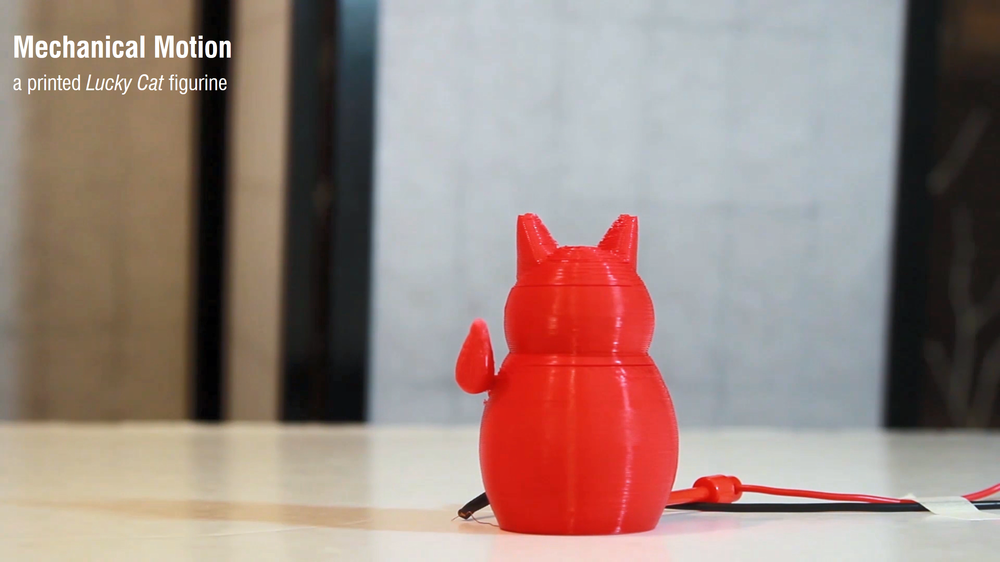
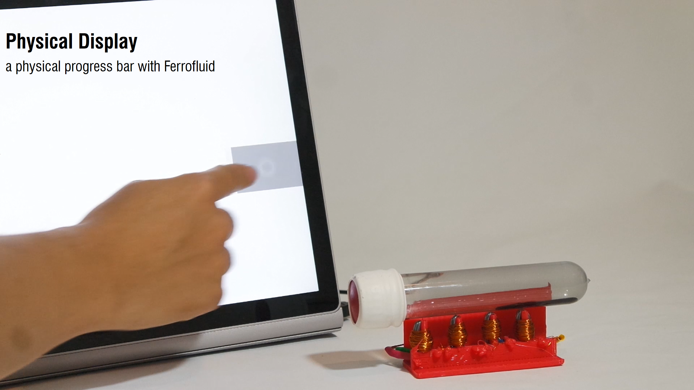
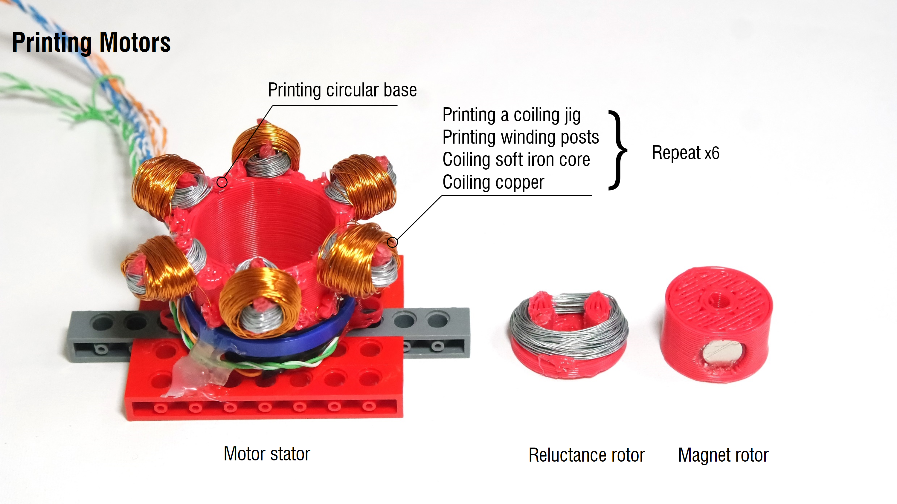
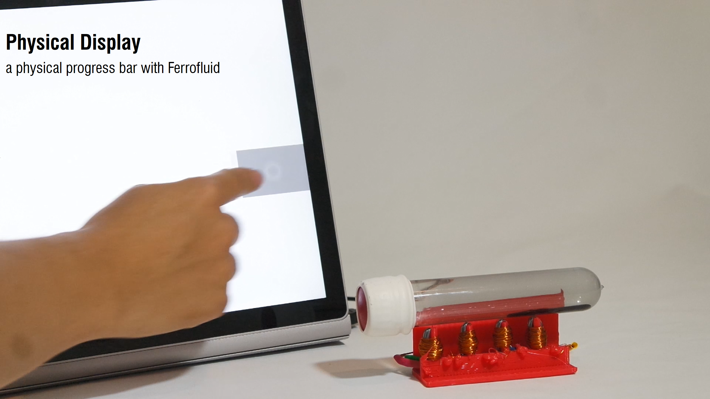
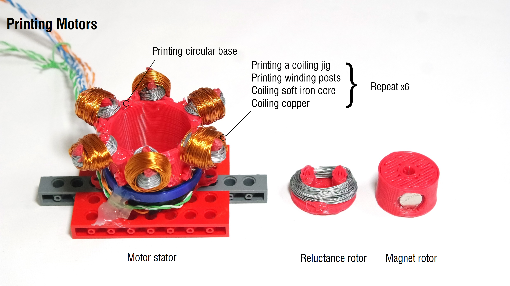

3D printing technology has moved beyond simply instantiating 3D geometries to printing functional and interactive objects. However, to date we have not been able to directly fabricate most functional devices needing actuators, but instead these required either assembly with, or addition of, pre-manufactured parts into a print
In this work, we introduce a new form of low-cost 3D printer to print interactive electromechanical objects with wound in place coils. At the heart of this printer is a mechanism for depositing wire within a five degree of freedom (5DOF) fused deposition modeling (FDM) 3D printer. Copper wire can be used with this mechanism to form coils which induce magnetic fields as a current is passed through them. Soft iron wire can additionally be used to form components with high magnetic permeability which are thus able to shape and direct these magnetic fields to where they are needed. When fabricated with structural plastic elements, this allows simple but complete custom electromagnetic devices to be 3D printed.
As examples, we demonstrate the fabrication of a solenoid actuator for the arm of a Lucky Cat figurine, a 6- pole motor stepper stator, a reluctance motor rotor and a Ferrofluid display. In addition, we show how printed coils which generate small currents in response to user actions can be used as input sensors in interactive devices.
Created by:
Huaishu Peng, François Guimbretière, James McCann, Scott Hudson
Publications:
Figures: